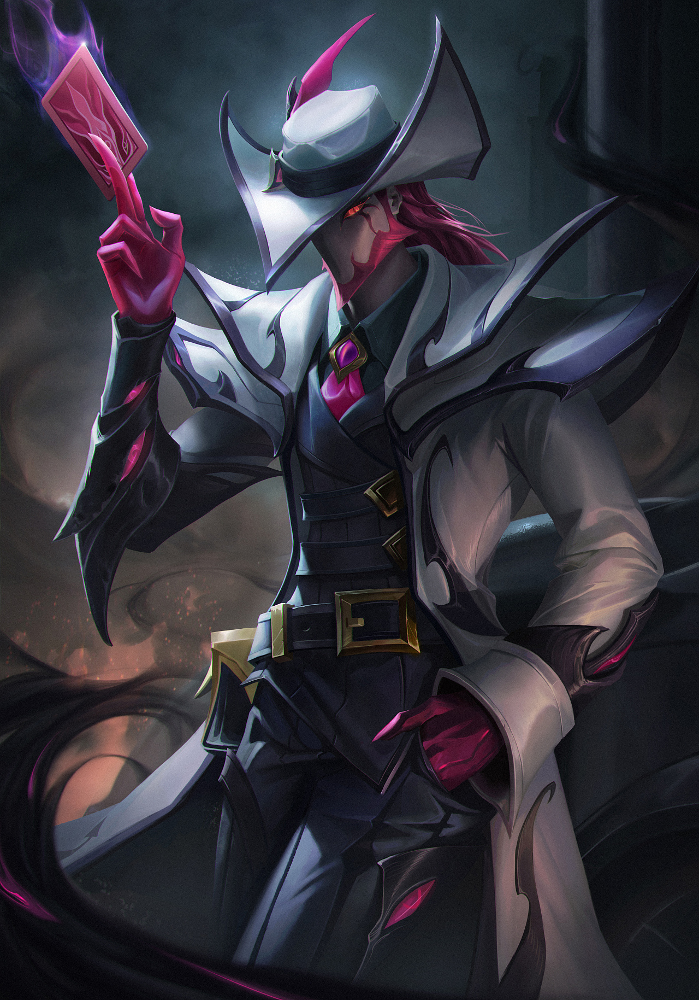

卡牌可以说是完全改变了云顶之奕一直以来的运营手法。在卡牌出现之前， 所有阵容几乎都是根据前期装备定阵容，即使你牌再胡，比方说6级来 了张亚索，但装备全是法装，那你这把无论如何也不能玩亚索， 常见的装备与阵容的匹配有：蓝buff--大眼，提莫；羊刀：厄菲硫斯，泽丽；无尽：亚索，劫。 但是卡牌完全违背了云顶之奕这一法则，从看装备定阵容变成了看来牌定装备和阵容。这也正是 卡牌适合新手的原因，其他英雄之力都需要同时运营装备和来牌，只要有一个炸了， 基本就g了。而卡牌只需要一直盯着来牌就行了，使游戏的输赢变得相对稳定。 与此同时，高稳定性和低操作难度带来的是低上限。铂金局以上几乎很难用卡牌吃鸡， 但只要不是特别霉，吃分一般问题不大。究其原因是因为卡牌存在两个致命缺点。
第一，众所周知，云顶之奕很吃运气，而一把比赛想要进前二运气必须要好。如果我这把运气很好， 来牌和装备都对，那我这把完全就不需要卡牌，相当于我少了别人一个海克斯，那肯定就很难进前二。反之，如果我运气不好， 那前二就更跟我没关系了。第二，卡牌需要看来牌，而来牌需要多个回合来观察，不能因为2-1发牌员给了张劫我就决定这把玩劫， 这样后面很有可能一张劫都见不到。在来牌没有观察好的情况下，我肯定不能合装备，如果我合了装备，那我卡牌相当于没选， 而且前期卡牌战斗力本就是倒着数的，合了也大概率会输。所以我前期必连败，但是我本来一直连败就可以拿到完美装备， 卡牌对我来说提升也聊胜于无。总而言之，卡牌仅适合新手或者运气特别差的选手使用。如果你今天把把被发牌员和选秀折磨， 不妨试一下卡牌。